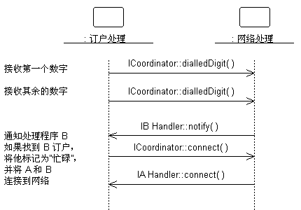
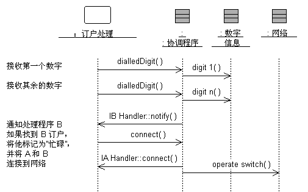

|
目的
|
指定子系统的内部行为。
确定满足子系统行为需求所需的新设计类或设计子系统。
|
子系统的外部行为主要由它实现的接口来定义。子系统实现某一接口后，它就承诺要支持该接口定义的每个操作。操作反过来可能会由子系统所包含的设计元素（即， 设计类或 设计子系统）上的操作来实现；该操作可能要求与其他设计元素协作
子系统内模型元素的协作应该用显示子系统行为如何实现的时序图来记录。子系统在接口上实现的每个操作都应该有一个或多个记录的时序图。该图归该子系统所有，并用于设计子系统的内部行为。
如果子系统的行为高度依赖于状态并代表一个或多个控制线程，那么状态机一般在描述子系统行为时更有用。这种情况下的状态机通常与活动类一起用来表示系统（或者这种情况下的子系统）的控制线程的分解，并在状态表图中有所描述，请参阅指南：状态表图。在实时系统中， 工作产品：封装体的行为还将使用状态机来描述。在子系统内可能有独立的执行线程，这由活动类表示。 工作产品：封装体的行为还将使用状态机来描述。在子系统内可能有独立的执行线程，这由活动类表示。
在实时系统中， 工作产品：封装体将用来包括这些线程。
示例：
子系统协作执行系统要求的某一行为，这可以用时序图表示：

该图显示子系统的接口如何用于执行场景。特别是对于“网络处理”子系统，我们发现了子系统必须支持的特定接口（在这种情况下是 ICoordinator）和操作。我们还发现“网络处理”子系统依赖于 IBHandler 和 IAHandler
接口。
在子系统内部，我们发现了 ICoordinator 接口是如何实现的：

“协调程序”类充当 ICoordinator 接口的“代理”，处理接口操作并协调接口行为。
该“内部”时序图确切地显示了哪些类提供接口，内部需要发生什么情况才能提供子系统的功能，以及哪些类从子系统向外发送消息。该图阐明了内部设计，这对于内部设计复杂的子系统是必不可少的。它还能使读者很容易了解子系统行为，这样就有希望使其在各环境中可重用。
创建这些“接口实现”图时，可能有必要创建新的类和子系统来执行所要求的行为。流程与“用例分析”中所定义的类似，但我们处理的是接口操作而不是用例。对于每个接口操作，确定在当前子系统中执行该操作所需要的类（或者在所要求的行为很复杂的某些情况下，为包含的子系统）。在现有类／子系统无法提供所要求的行为的情况下，创建新的类／子系统（但先尝试重用）。
创建新的设计元素时，应强制重新考虑子系统内容和边界。要小心避免两个不同子系统中的类实际相同。存在这样的类则意味着子系统边界可能定得不大好。定期重新访问任务：确定设计元素，这可重新平衡子系统职责。
有时创建两个单独的子系统内部模型会很有用，一个是以子系统客户端为目标的规范，而另一个是以实施者为目标的实现。规范可以包括“理想”的类和协作，根据理想的类和协作来描述子系统的行为。另一方面，实现则更与实施紧密相符，并可能演变为实施。有关设计子系统规范和实现的更多信息，请参阅工作产品指南：设计子系统、子系统规范和实现。
|